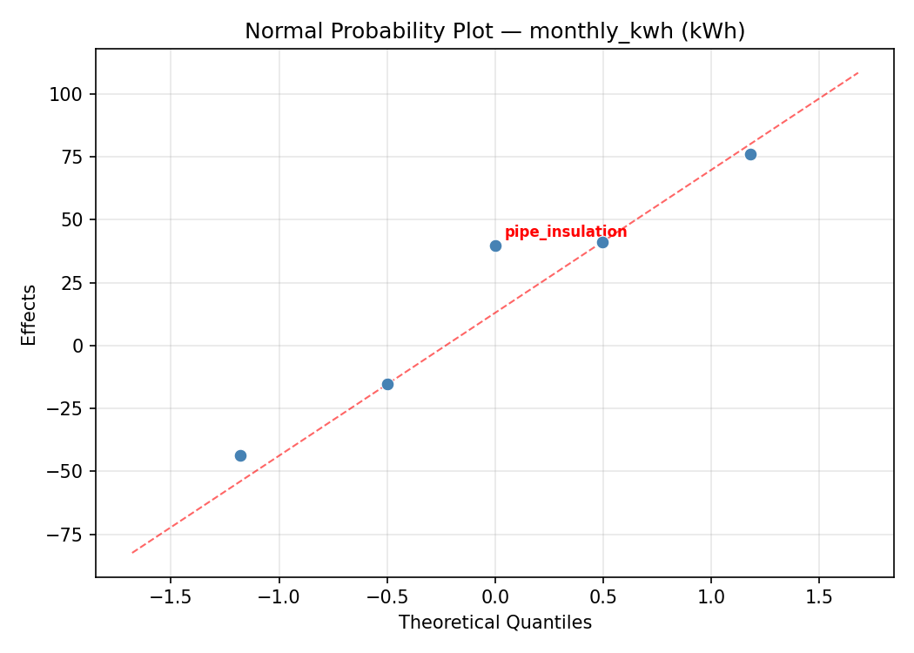
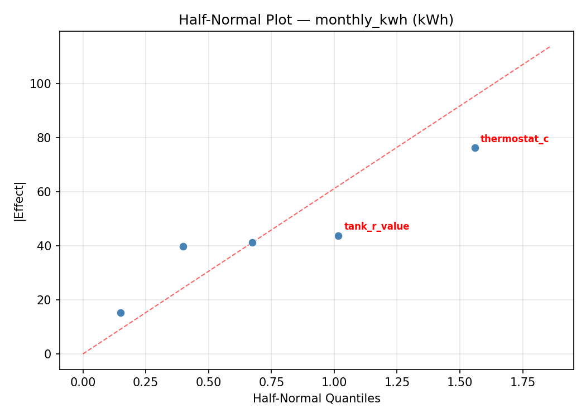
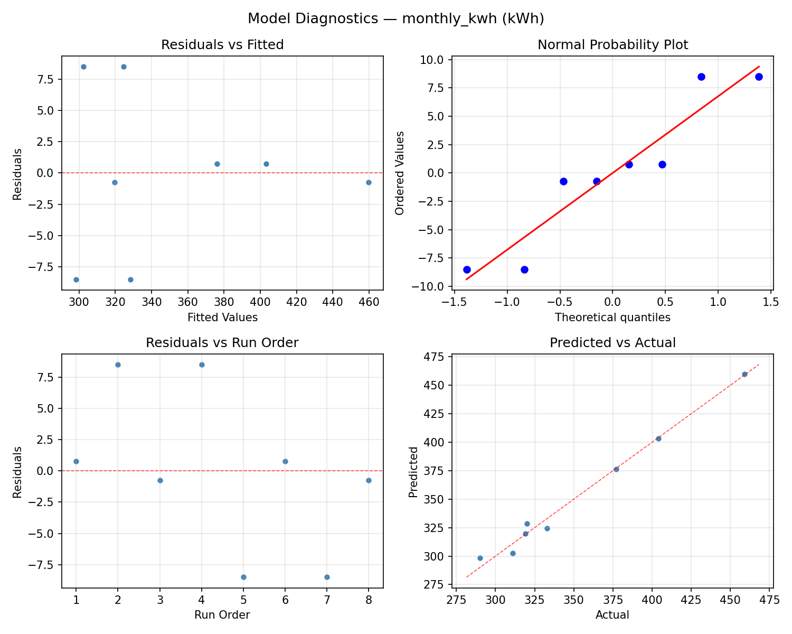
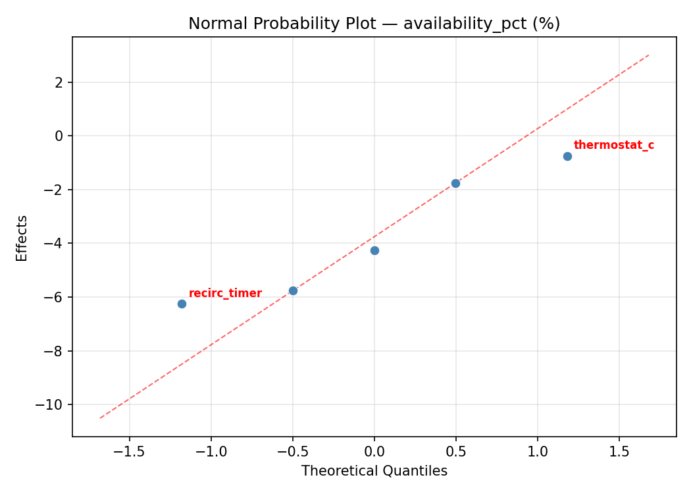
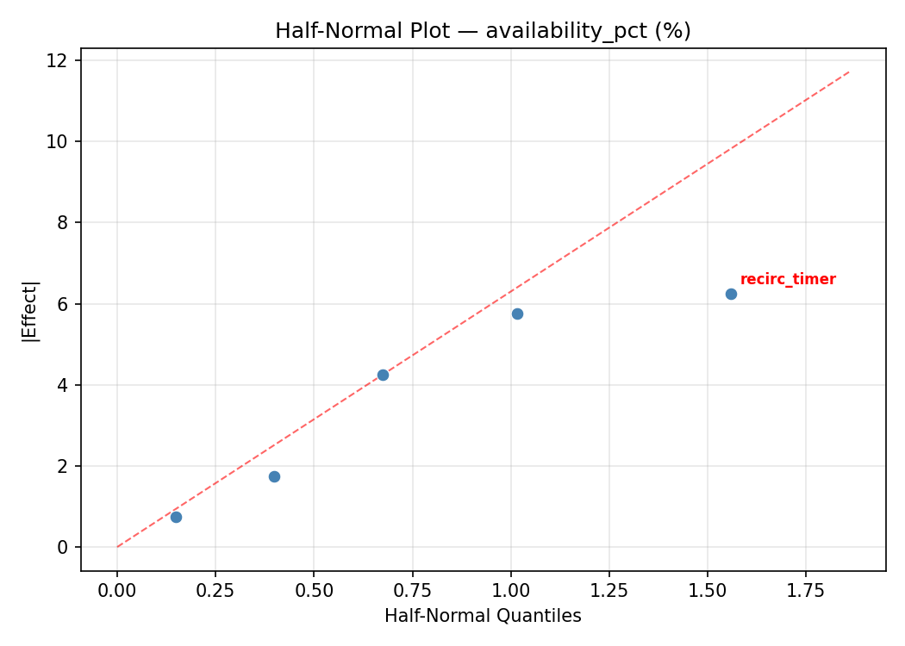
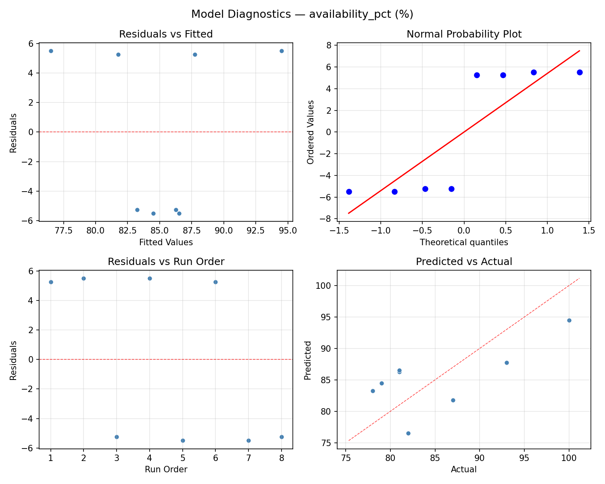

Summary
This experiment investigates water heater efficiency. Plackett-Burman screening of thermostat setting, tank insulation, pipe insulation, recirculation timer, and inlet temperature for energy savings and hot water availability.
The design varies 5 factors: thermostat c (C), ranging from 48 to 65, tank r value (R-value), ranging from 6 to 18, pipe insulation (bool), ranging from 0 to 1, recirc timer (bool), ranging from 0 to 1, and inlet temp c (C), ranging from 5 to 20. The goal is to optimize 2 responses: monthly kwh (kWh) (minimize) and availability pct (%) (maximize). Fixed conditions held constant across all runs include tank size L = 200, household size = 4.
A Plackett-Burman screening design was used to efficiently test 5 factors in only 8 runs. This design assumes interactions are negligible and focuses on identifying the most influential main effects.
Key Findings
For monthly kwh, the most influential factors were inlet temp c (40.6%), tank r value (22.9%), thermostat c (19.4%). The best observed value was 290.0 (at thermostat c = 48, tank r value = 18, pipe insulation = 0).
For availability pct, the most influential factors were recirc timer (41.3%), tank r value (30.7%), thermostat c (17.3%). The best observed value was 100.0 (at thermostat c = 65, tank r value = 6, pipe insulation = 0).
Recommended Next Steps
- Follow up with a response surface design (CCD or Box-Behnken) on the top 3–4 factors to model curvature and find the true optimum.
- Consider whether any fixed factors should be varied in a future study.
- The screening results can guide factor reduction — drop factors contributing less than 5% and re-run with a smaller, more focused design.
Experimental Setup
Factors
| Factor | Low | High | Unit |
|---|
thermostat_c | 48 | 65 | C |
tank_r_value | 6 | 18 | R-value |
pipe_insulation | 0 | 1 | bool |
recirc_timer | 0 | 1 | bool |
inlet_temp_c | 5 | 20 | C |
Fixed: tank_size_L = 200, household_size = 4
Responses
| Response | Direction | Unit |
|---|
monthly_kwh | ↓ minimize | kWh |
availability_pct | ↑ maximize | % |
Configuration
{
"metadata": {
"name": "Water Heater Efficiency",
"description": "Plackett-Burman screening of thermostat setting, tank insulation, pipe insulation, recirculation timer, and inlet temperature for energy savings and hot water availability"
},
"factors": [
{
"name": "thermostat_c",
"levels": [
"48",
"65"
],
"type": "continuous",
"unit": "C"
},
{
"name": "tank_r_value",
"levels": [
"6",
"18"
],
"type": "continuous",
"unit": "R-value"
},
{
"name": "pipe_insulation",
"levels": [
"0",
"1"
],
"type": "continuous",
"unit": "bool"
},
{
"name": "recirc_timer",
"levels": [
"0",
"1"
],
"type": "continuous",
"unit": "bool"
},
{
"name": "inlet_temp_c",
"levels": [
"5",
"20"
],
"type": "continuous",
"unit": "C"
}
],
"fixed_factors": {
"tank_size_L": "200",
"household_size": "4"
},
"responses": [
{
"name": "monthly_kwh",
"optimize": "minimize",
"unit": "kWh"
},
{
"name": "availability_pct",
"optimize": "maximize",
"unit": "%"
}
],
"settings": {
"operation": "plackett_burman",
"test_script": "use_cases/132_water_heater_efficiency/sim.sh"
}
}
Experimental Matrix
The Plackett-Burman Design produces 8 runs. Each row is one experiment with specific factor settings.
| Run | thermostat_c | tank_r_value | pipe_insulation | recirc_timer | inlet_temp_c |
|---|
| 1 | 65 | 18 | 1 | 0 | 5 |
| 2 | 48 | 6 | 1 | 1 | 5 |
| 3 | 48 | 18 | 0 | 1 | 5 |
| 4 | 65 | 18 | 1 | 1 | 20 |
| 5 | 48 | 18 | 0 | 0 | 20 |
| 6 | 65 | 6 | 0 | 1 | 20 |
| 7 | 48 | 6 | 1 | 0 | 20 |
| 8 | 65 | 6 | 0 | 0 | 5 |
Step-by-Step Workflow
1
Preview the design
$ python doe.py info --config use_cases/132_water_heater_efficiency/config.json
2
Generate the runner script
$ python doe.py generate --config use_cases/132_water_heater_efficiency/config.json \
--output use_cases/132_water_heater_efficiency/results/run.sh --seed 42
3
Execute the experiments
$ bash use_cases/132_water_heater_efficiency/results/run.sh
4
Analyze results
$ python doe.py analyze --config use_cases/132_water_heater_efficiency/config.json
5
Get optimization recommendations
$ python doe.py optimize --config use_cases/132_water_heater_efficiency/config.json
6
Multi-objective optimization
With 2 competing responses, use --multi to find the best compromise via Derringer–Suich desirability.
$ python doe.py optimize --config use_cases/132_water_heater_efficiency/config.json --multi
7
Generate the HTML report
$ python doe.py report --config use_cases/132_water_heater_efficiency/config.json \
--output use_cases/132_water_heater_efficiency/results/report.html
Features Exercised
| Feature | Value |
|---|
| Design type | plackett_burman |
| Factor types | continuous (all 5) |
| Arg style | double-dash |
| Responses | 2 (monthly_kwh ↓, availability_pct ↑) |
| Total runs | 8 |
Analysis Results
Generated from actual experiment runs using the DOE Helper Tool.
Response: monthly_kwh
Top factors: inlet_temp_c (40.6%), tank_r_value (22.9%), thermostat_c (19.4%).
ANOVA
| Source | DF | SS | MS | F | p-value |
|---|
| Source | DF | SS | MS | F | p-value |
| thermostat_c | 1 | 2701.1250 | 2701.1250 | 0.667 | 0.4513 |
| tank_r_value | 1 | 3741.1250 | 3741.1250 | 0.923 | 0.3807 |
| pipe_insulation | 1 | 351.1250 | 351.1250 | 0.087 | 0.7803 |
| recirc_timer | 1 | 741.1250 | 741.1250 | 0.183 | 0.6867 |
| inlet_temp_c | 1 | 11781.1250 | 11781.1250 | 2.908 | 0.1489 |
| thermostat_c*tank_r_value | 1 | 351.1250 | 351.1250 | 0.087 | 0.7803 |
| thermostat_c*pipe_insulation | 1 | 3741.1250 | 3741.1250 | 0.923 | 0.3807 |
| thermostat_c*recirc_timer | 1 | 11781.1250 | 11781.1250 | 2.908 | 0.1489 |
| thermostat_c*inlet_temp_c | 1 | 741.1250 | 741.1250 | 0.183 | 0.6867 |
| tank_r_value*pipe_insulation | 1 | 2701.1250 | 2701.1250 | 0.667 | 0.4513 |
| tank_r_value*recirc_timer | 1 | 300.1250 | 300.1250 | 0.074 | 0.7964 |
| tank_r_value*inlet_temp_c | 1 | 3160.1250 | 3160.1250 | 0.780 | 0.4176 |
| pipe_insulation*recirc_timer | 1 | 3160.1250 | 3160.1250 | 0.780 | 0.4176 |
| pipe_insulation*inlet_temp_c | 1 | 300.1250 | 300.1250 | 0.074 | 0.7964 |
| recirc_timer*inlet_temp_c | 1 | 2701.1250 | 2701.1250 | 0.667 | 0.4513 |
| Error | (Lenth | PSE) | 5 | 20258.4375 | 4051.6875 |
| Total | 7 | 22775.8750 | 3253.6964 | | |
Pareto Chart

Main Effects Plot

Normal Probability Plot of Effects

Half-Normal Plot of Effects

Model Diagnostics

Response: availability_pct
Top factors: recirc_timer (41.3%), tank_r_value (30.7%), thermostat_c (17.3%).
ANOVA
| Source | DF | SS | MS | F | p-value |
|---|
| Source | DF | SS | MS | F | p-value |
| thermostat_c | 1 | 21.1250 | 21.1250 | 0.667 | 0.4513 |
| tank_r_value | 1 | 66.1250 | 66.1250 | 2.087 | 0.2082 |
| pipe_insulation | 1 | 3.1250 | 3.1250 | 0.099 | 0.7662 |
| recirc_timer | 1 | 120.1250 | 120.1250 | 3.791 | 0.1091 |
| inlet_temp_c | 1 | 1.1250 | 1.1250 | 0.036 | 0.8580 |
| thermostat_c*tank_r_value | 1 | 3.1250 | 3.1250 | 0.099 | 0.7662 |
| thermostat_c*pipe_insulation | 1 | 66.1250 | 66.1250 | 2.087 | 0.2082 |
| thermostat_c*recirc_timer | 1 | 1.1250 | 1.1250 | 0.036 | 0.8580 |
| thermostat_c*inlet_temp_c | 1 | 120.1250 | 120.1250 | 3.791 | 0.1091 |
| tank_r_value*pipe_insulation | 1 | 21.1250 | 21.1250 | 0.667 | 0.4513 |
| tank_r_value*recirc_timer | 1 | 171.1250 | 171.1250 | 5.400 | 0.0677 |
| tank_r_value*inlet_temp_c | 1 | 36.1250 | 36.1250 | 1.140 | 0.3345 |
| pipe_insulation*recirc_timer | 1 | 36.1250 | 36.1250 | 1.140 | 0.3345 |
| pipe_insulation*inlet_temp_c | 1 | 171.1250 | 171.1250 | 5.400 | 0.0677 |
| recirc_timer*inlet_temp_c | 1 | 21.1250 | 21.1250 | 0.667 | 0.4513 |
| Error | (Lenth | PSE) | 5 | 158.4375 | 31.6875 |
| Total | 7 | 418.8750 | 59.8393 | | |
Pareto Chart

Main Effects Plot

Normal Probability Plot of Effects

Half-Normal Plot of Effects

Model Diagnostics

Response Surface Plots
3D surfaces fitted with quadratic RSM. Red dots are observed data points.
availability pct pipe insulation vs inlet temp c

availability pct pipe insulation vs recirc timer

availability pct recirc timer vs inlet temp c

availability pct tank r value vs inlet temp c

availability pct tank r value vs pipe insulation

availability pct tank r value vs recirc timer

availability pct thermostat c vs inlet temp c

availability pct thermostat c vs pipe insulation

availability pct thermostat c vs recirc timer

availability pct thermostat c vs tank r value

monthly kwh pipe insulation vs inlet temp c

monthly kwh pipe insulation vs recirc timer

monthly kwh recirc timer vs inlet temp c

monthly kwh tank r value vs inlet temp c

monthly kwh tank r value vs pipe insulation

monthly kwh tank r value vs recirc timer

monthly kwh thermostat c vs inlet temp c

monthly kwh thermostat c vs pipe insulation

monthly kwh thermostat c vs recirc timer

monthly kwh thermostat c vs tank r value

Multi-Objective Optimization
When responses compete, Derringer–Suich desirability finds the best compromise.
Each response is scaled to a 0–1 desirability, then combined via a weighted geometric mean.
Overall Desirability
D = 0.9076
Per-Response Desirability
| Response | Weight | Desirability | Predicted | Dir |
|---|
monthly_kwh |
1.0 |
|
311.00 0.8416 311.00 kWh |
↓ |
availability_pct |
1.5 |
|
100.00 0.9545 100.00 % |
↑ |
Recommended Settings
| Factor | Value |
|---|
thermostat_c | 48 C |
tank_r_value | 6 R-value |
pipe_insulation | 1 bool |
recirc_timer | 1 bool |
inlet_temp_c | 5 C |
Source: from observed run #4
Trade-off Summary
Sacrifice = how much worse than single-objective best.
| Response | Predicted | Best Observed | Sacrifice |
|---|
availability_pct | 100.00 | 100.00 | +0.00 |
Top 3 Runs by Desirability
| Run | D | Factor Settings |
|---|
| #6 | 0.5094 | thermostat_c=48, tank_r_value=6, pipe_insulation=1, recirc_timer=0, inlet_temp_c=20 |
| #1 | 0.4438 | thermostat_c=48, tank_r_value=18, pipe_insulation=0, recirc_timer=0, inlet_temp_c=20 |
Model Quality
| Response | R² | Type |
|---|
availability_pct | 0.8633 | linear |
Full Multi-Objective Output
============================================================
MULTI-OBJECTIVE OPTIMIZATION
Method: Derringer-Suich Desirability Function
============================================================
Overall desirability: D = 0.9076
Response Weight Desirability Predicted Direction
---------------------------------------------------------------------
monthly_kwh 1.0 0.8416 311.00 kWh ↓
availability_pct 1.5 0.9545 100.00 % ↑
Recommended settings:
thermostat_c = 48 C
tank_r_value = 6 R-value
pipe_insulation = 1 bool
recirc_timer = 1 bool
inlet_temp_c = 5 C
(from observed run #4)
Trade-off summary:
monthly_kwh: 311.00 (best observed: 290.00, sacrifice: +21.00)
availability_pct: 100.00 (best observed: 100.00, sacrifice: +0.00)
Model quality:
monthly_kwh: R² = 0.7427 (linear)
availability_pct: R² = 0.8633 (linear)
Top 3 observed runs by overall desirability:
1. Run #4 (D=0.9076): thermostat_c=48, tank_r_value=6, pipe_insulation=1, recirc_timer=1, inlet_temp_c=5
2. Run #6 (D=0.5094): thermostat_c=48, tank_r_value=6, pipe_insulation=1, recirc_timer=0, inlet_temp_c=20
3. Run #1 (D=0.4438): thermostat_c=48, tank_r_value=18, pipe_insulation=0, recirc_timer=0, inlet_temp_c=20
Full Analysis Output
=== Main Effects: monthly_kwh ===
Factor Effect Std Error % Contribution
--------------------------------------------------------------
inlet_temp_c -76.7500 20.1671 40.6%
tank_r_value -43.2500 20.1671 22.9%
thermostat_c -36.7500 20.1671 19.4%
recirc_timer -19.2500 20.1671 10.2%
pipe_insulation 13.2500 20.1671 7.0%
=== ANOVA Table: monthly_kwh ===
Source DF SS MS F p-value
-----------------------------------------------------------------------------
thermostat_c 1 2701.1250 2701.1250 0.667 0.4513
tank_r_value 1 3741.1250 3741.1250 0.923 0.3807
pipe_insulation 1 351.1250 351.1250 0.087 0.7803
recirc_timer 1 741.1250 741.1250 0.183 0.6867
inlet_temp_c 1 11781.1250 11781.1250 2.908 0.1489
thermostat_c*tank_r_value 1 351.1250 351.1250 0.087 0.7803
thermostat_c*pipe_insulation 1 3741.1250 3741.1250 0.923 0.3807
thermostat_c*recirc_timer 1 11781.1250 11781.1250 2.908 0.1489
thermostat_c*inlet_temp_c 1 741.1250 741.1250 0.183 0.6867
tank_r_value*pipe_insulation 1 2701.1250 2701.1250 0.667 0.4513
tank_r_value*recirc_timer 1 300.1250 300.1250 0.074 0.7964
tank_r_value*inlet_temp_c 1 3160.1250 3160.1250 0.780 0.4176
pipe_insulation*recirc_timer 1 3160.1250 3160.1250 0.780 0.4176
pipe_insulation*inlet_temp_c 1 300.1250 300.1250 0.074 0.7964
recirc_timer*inlet_temp_c 1 2701.1250 2701.1250 0.667 0.4513
Error (Lenth PSE) 5 20258.4375 4051.6875
Total 7 22775.8750 3253.6964
Note: Error estimated using Lenth's pseudo-standard-error (unreplicated design)
=== Interaction Effects: monthly_kwh ===
Factor A Factor B Interaction % Contribution
------------------------------------------------------------------------
thermostat_c recirc_timer 76.7500 23.3%
thermostat_c pipe_insulation 43.2500 13.1%
tank_r_value inlet_temp_c 39.7500 12.0%
pipe_insulation recirc_timer 39.7500 12.0%
tank_r_value pipe_insulation 36.7500 11.1%
recirc_timer inlet_temp_c 36.7500 11.1%
thermostat_c inlet_temp_c 19.2500 5.8%
thermostat_c tank_r_value -13.2500 4.0%
tank_r_value recirc_timer 12.2500 3.7%
pipe_insulation inlet_temp_c 12.2500 3.7%
=== Summary Statistics: monthly_kwh ===
thermostat_c:
Level N Mean Std Min Max
------------------------------------------------------------
48 4 370.0000 65.3707 311.0000 459.0000
65 4 333.2500 49.1757 290.0000 404.0000
tank_r_value:
Level N Mean Std Min Max
------------------------------------------------------------
18 4 373.2500 70.9853 311.0000 459.0000
6 4 330.0000 36.1386 290.0000 377.0000
pipe_insulation:
Level N Mean Std Min Max
------------------------------------------------------------
0 4 345.0000 77.0325 290.0000 459.0000
1 4 358.2500 39.2545 319.0000 404.0000
recirc_timer:
Level N Mean Std Min Max
------------------------------------------------------------
0 4 361.2500 74.5313 290.0000 459.0000
1 4 342.0000 42.3084 311.0000 404.0000
inlet_temp_c:
Level N Mean Std Min Max
------------------------------------------------------------
20 4 390.0000 57.8100 320.0000 459.0000
5 4 313.2500 17.9699 290.0000 333.0000
=== Main Effects: availability_pct ===
Factor Effect Std Error % Contribution
--------------------------------------------------------------
recirc_timer 7.7500 2.7349 41.3%
tank_r_value -5.7500 2.7349 30.7%
thermostat_c -3.2500 2.7349 17.3%
pipe_insulation 1.2500 2.7349 6.7%
inlet_temp_c 0.7500 2.7349 4.0%
=== ANOVA Table: availability_pct ===
Source DF SS MS F p-value
-----------------------------------------------------------------------------
thermostat_c 1 21.1250 21.1250 0.667 0.4513
tank_r_value 1 66.1250 66.1250 2.087 0.2082
pipe_insulation 1 3.1250 3.1250 0.099 0.7662
recirc_timer 1 120.1250 120.1250 3.791 0.1091
inlet_temp_c 1 1.1250 1.1250 0.036 0.8580
thermostat_c*tank_r_value 1 3.1250 3.1250 0.099 0.7662
thermostat_c*pipe_insulation 1 66.1250 66.1250 2.087 0.2082
thermostat_c*recirc_timer 1 1.1250 1.1250 0.036 0.8580
thermostat_c*inlet_temp_c 1 120.1250 120.1250 3.791 0.1091
tank_r_value*pipe_insulation 1 21.1250 21.1250 0.667 0.4513
tank_r_value*recirc_timer 1 171.1250 171.1250 5.400 0.0677
tank_r_value*inlet_temp_c 1 36.1250 36.1250 1.140 0.3345
pipe_insulation*recirc_timer 1 36.1250 36.1250 1.140 0.3345
pipe_insulation*inlet_temp_c 1 171.1250 171.1250 5.400 0.0677
recirc_timer*inlet_temp_c 1 21.1250 21.1250 0.667 0.4513
Error (Lenth PSE) 5 158.4375 31.6875
Total 7 418.8750 59.8393
Note: Error estimated using Lenth's pseudo-standard-error (unreplicated design)
=== Interaction Effects: availability_pct ===
Factor A Factor B Interaction % Contribution
------------------------------------------------------------------------
tank_r_value recirc_timer -9.2500 18.9%
pipe_insulation inlet_temp_c -9.2500 18.9%
thermostat_c inlet_temp_c -7.7500 15.8%
thermostat_c pipe_insulation 5.7500 11.7%
tank_r_value inlet_temp_c -4.2500 8.7%
pipe_insulation recirc_timer -4.2500 8.7%
tank_r_value pipe_insulation 3.2500 6.6%
recirc_timer inlet_temp_c 3.2500 6.6%
thermostat_c tank_r_value -1.2500 2.6%
thermostat_c recirc_timer -0.7500 1.5%
=== Summary Statistics: availability_pct ===
thermostat_c:
Level N Mean Std Min Max
------------------------------------------------------------
48 4 86.7500 9.5699 78.0000 100.0000
65 4 83.5000 6.4031 79.0000 93.0000
tank_r_value:
Level N Mean Std Min Max
------------------------------------------------------------
18 4 88.0000 10.2956 78.0000 100.0000
6 4 82.2500 3.4034 79.0000 87.0000
pipe_insulation:
Level N Mean Std Min Max
------------------------------------------------------------
0 4 84.5000 10.4083 78.0000 100.0000
1 4 85.7500 5.5000 81.0000 93.0000
recirc_timer:
Level N Mean Std Min Max
------------------------------------------------------------
0 4 81.2500 4.0311 78.0000 87.0000
1 4 89.0000 9.1287 81.0000 100.0000
inlet_temp_c:
Level N Mean Std Min Max
------------------------------------------------------------
20 4 84.7500 6.6521 78.0000 93.0000
5 4 85.5000 9.7468 79.0000 100.0000
Optimization Recommendations
=== Optimization: monthly_kwh ===
Direction: minimize
Best observed run: #5
thermostat_c = 48
tank_r_value = 18
pipe_insulation = 0
recirc_timer = 0
inlet_temp_c = 20
Value: 290.0
RSM Model (linear, R² = 0.8453, Adj R² = 0.4586):
Coefficients:
intercept +351.6250
thermostat_c -19.8750
tank_r_value +9.6250
pipe_insulation +6.6250
recirc_timer +23.8750
inlet_temp_c -36.1250
Predicted optimum (from linear model, at observed points):
thermostat_c = 48
tank_r_value = 18
pipe_insulation = 0
recirc_timer = 1
inlet_temp_c = 5
Predicted value: 434.5000
Surface optimum (via L-BFGS-B, linear model):
thermostat_c = 65
tank_r_value = 6
pipe_insulation = 0
recirc_timer = 0
inlet_temp_c = 20
Predicted value: 255.5000
Model quality: Good fit — general trends are captured, some noise remains.
Factor importance:
1. inlet_temp_c (effect: 72.2, contribution: 37.6%)
2. recirc_timer (effect: 47.8, contribution: 24.8%)
3. thermostat_c (effect: -39.8, contribution: 20.7%)
4. tank_r_value (effect: -19.2, contribution: 10.0%)
5. pipe_insulation (effect: 13.2, contribution: 6.9%)
=== Optimization: availability_pct ===
Direction: maximize
Best observed run: #4
thermostat_c = 65
tank_r_value = 6
pipe_insulation = 0
recirc_timer = 0
inlet_temp_c = 5
Value: 100.0
RSM Model (linear, R² = 0.8132, Adj R² = 0.3462):
Coefficients:
intercept +85.1250
thermostat_c +2.1250
tank_r_value -3.8750
pipe_insulation +0.6250
recirc_timer -1.8750
inlet_temp_c -4.3750
Predicted optimum (from linear model, at observed points):
thermostat_c = 65
tank_r_value = 6
pipe_insulation = 0
recirc_timer = 0
inlet_temp_c = 5
Predicted value: 96.7500
Surface optimum (via L-BFGS-B, linear model):
thermostat_c = 65
tank_r_value = 6
pipe_insulation = 1
recirc_timer = 0
inlet_temp_c = 5
Predicted value: 98.0000
Model quality: Good fit — general trends are captured, some noise remains.
Factor importance:
1. inlet_temp_c (effect: 8.8, contribution: 34.0%)
2. tank_r_value (effect: 7.8, contribution: 30.1%)
3. thermostat_c (effect: 4.2, contribution: 16.5%)
4. recirc_timer (effect: -3.8, contribution: 14.6%)
5. pipe_insulation (effect: 1.2, contribution: 4.9%)